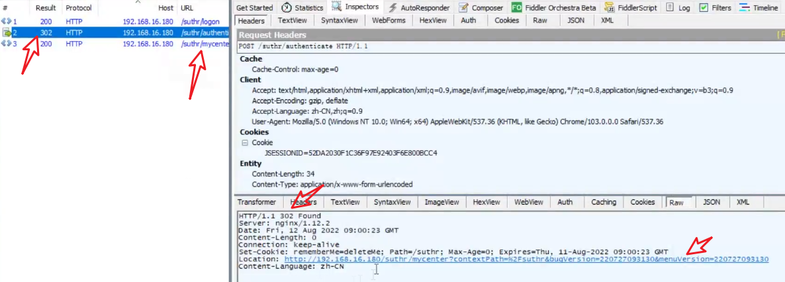

2022年10月19日 更
[toc]
线程
操作系统进行运算调度的最小单位
一条进程中可以有多条线程，共享进程中的全部系统资源
每个用户作为一个线程，减少资源浪费
性能测试指标
传输协议
https = http+ssl/tls(一种加密手段)
HTTPS的默认端口为443
http为80
HTTP-统一资原标识符(URL)
协议部分
代表网页便用的是HTTP协议。在Interneti中可以使用多种协议，如HTTP,FTP等等。
在”HTTP”后面的“I为分隔符
域名部分
“www.aspxfans.com"。一个URL中，也可以便使用IP地址作为域名使用
端口部分
跟在域名后面的是端口，域名和端口之间使用“：”作为分隔符。端口不是一个URL必须的部分，如果省略端口部分，将采用默认端口80/tcp
虚拟目录部分
从域名后的第一个“”开始到最后一个“/”为止，是虚拟目录部分。虚拟目录也不是一个URL必须的部分。本例中的虚拟目录是“/news/“
文件名部分
从域名后的最后一个“/”开始到”？”为止，是文件名部分，如果没有”？”，则是从域名后的最后一个“/”开始到“#”为止，是文件部分，如果没有“？”和“#”，那么从域名后的最后一个“/”开始到结束，都是文件名部分。本例中的文件名是”index.asp”。文件名部分也不是一个URL必须的部分，如果省略该部分，则使用默认的文件名
锚部分
从“#”开始到最后，都是锚部分。本例中的锚部分是“name”。锚部分也不是一个URL必须的部分（可以理解为定位）
参数部分
从“？”开始到“#”为止之间的部分为参数部分，又称搜索部分、查询部分。本例中的参数部分为“boardID=5&ID=24618&page=1”。参数可以允许有多个参数，参数与参数之间用“&”作为分隔符。
http请求数据包
请求头
响应数据包
Jmeter常见术语
jmeter 运行原理
jmeter 目录结构
Jmeter测试元件
jmeter的工作区
区域①是一个目录树，存放测试设计过程中使用到的元件；执行过程中默认从根节点开始顺序遍历树上的元件。
区域②是测试计划编辑区域，在”用户定义的变量”区域，我们可以定义整个测试计划公用的全局变量，这些变量对多个线程组有效。我们还可以对线程组的运行进行设置：比如”独立运行每个线程组”、“Run tearDown Thread Groups after shutdown of main threads”
- 测试计划：是JMeter测试脚本根节点，每一个测试脚本都是一个测试计划。
- 名称：可以随意设置，最好有业务意义。
- 注释：可以随意设置，可以为空。
- 用户定义的变量：全局变量
- 独立运行每个线程组：如果一个测试计划中有多个线程组，设置此项可以生效。不设置时每个线程组同时运行。
- Run tearDown Thread Groups after shutdown of main threads:关闭主线程后运行tearDown程序来正
常关闭线程组（运行的线程本次迭代完成后关闭）。 - 函数测试模式：在调试脚本的过程中，如果需要获取服务器返回的详细信息就可以选择此项：选择此项后，如果记录较多的数据会影响测试效率，所以在执行性能测试时，最好关闭此项。
- Add directory or jar to classpath:把测试需要依赖的jar包或包所在的目录加入类路径。测试需要依赖的jar包还可以直接放到%JMETER HOME%Iib目录下。(%JMETER HOME%:JMeter安装目录
区域③是菜单栏，图标是菜单快捷方式。
jmeter作用域规则
- 除了逻辑控制器，其他配置元件遵循分层规则
- 父采样器 仅对父生效
- 父逻辑控制器 对逻辑控制器下采样器生效
jmeter执行顺序
- 0、 配置元件(Config Element)
- 1、前置处理器(Pre Processors)
- 2、定时器(Timer)
- 3、取样器(Sampler)
- 4、后置处理器(Post Processors)
- 5、断言(Assertions)
- 6、监听器(Listener)
注意，只有取样器结果不为空的情况下才会执行4、5、6
一个简单的例子：
jmeter脚本添加
- 根节点测试计划=场景
- 测试计划中至少需要线程组 = group
- 取样器 模拟用户请求
- 监听器 衡量系统性能
添加http请求
方法：HTTP清求的方法，最常用的有GET和POST。
路径：除去主机地址部分的访问链接。
Content encoding:字符编码格式，默认iso8859,大多数应用会指定成UTF-8格式。
自动重定向：HttpClient接收到请求后，如果请求中包含重定向请求，HttpClient是可以自动跳转的，但是只针对GET与HEAD请求，勾选此项则“跟随重定向”失效：自动重定向可以自动转向到最终目标页面，但是JMeter是不记录重定向过程内容的，比如在查看结果树中是无O法找到重定向过程内容的(A重定向到B,此时只记录B的内容不记录A的内容，A的响应内容暂且叫做过程内容)，如果此时要做关联，那就比较遗憾了，无法关联到。
- image-20221019112922675
- 返回的状态码为 302 并且跟随一个 链接，自动请求 然后跳转
- 302便是过程
跟随重定向：HTTP请求的默认选项，当响应Code是3xx时（比如301是重定向），自动跳转到目标地址。与自动重定向不同，JMeter会记录重定向过程中的所有请求响应，在查看结果树时可以看到服务器返回的内容，所以可以对响应的内容做关联。
Use KeepAlive:对应HTTP响应头中的Connection:Keep-Alive,默认选中。
Use multipart/form-data for POST:当发送HTTP POST请求时，使用Use multipart/form-data方法发送，比如我们可以用它做文件上传：这个属性是与方法POST绑定的。（提交文件时需要用到）
Browser-compatible headers:浏览器兼容模式，如果使用Use multipart/form-data for POST建议勾选此项。
Parameters:同请求一起发送的参数，可以把要发送的参数（就是表单域）与值填到此域GET方法也适用
Body Data：指的是实体数据，就是请求报文里面主体实体的内容，一般向服务器发送请求携带的实体主体参数，可以写入这里。Parameters和Body Data只能同时使用其中一种方式。
Files Upload:当使用Use multipart/.form-data for POST时可以在此一同上传文件。MIME类型有STRICT、BROWSER COMPATIBLE、RFC6532等.
添加查看结果树
- 可以查看每次请求的服务器返回信息，运行时耗费资源，在性能测试的时候通常用于调试，运行时会关闭
为取样器添加content—type（消息体数据）
采用body形式添加取样器的时候需要在取样器下面添加配置元件 信息头管理器，将content-type添加进去
请求中有添加附件
添加思考时间
请求之间的思考间隔
添加检查点
- Apply to main（父）sub（子）
- 看查找内容的需求
- 响应字段
- 模式匹配规则
- 包括（支持）
- 匹配-完全匹配-不敏感-支持
- 相等-完全相等-敏感-不支持
- 字符串-在响应中能找到即可-敏感-不支持
- 否-取反
- 或者-多个模式有一个为成功就是成功
添加事务
性能测试的核心，一系列的操作
- 第一个选项，会把登录事务看做成一个采样器输出在查看结果树中
- 第二个选择，把时间等待和前置处理器的时间也算上
添加集合点
用于模拟很多人一起提交的场景

模拟用户组的数量：一次性释放的线程数，为0时=线程组的线程数
超时时间：设置等待的时间，0=一致等待
注意，若设置的用户组数量>当前线程数，等待时间为0会一直等待下去
设置脚本参数化
jmeter csv数据文件设置
属于 配置元件

使用csv数据文件
${变量名称}
查看参数取值情况
在查看结果树前，添加调试取样器
jmeter函数 CSVREAD
- 应该严格区分大小写
- *alias特性可打开同一个文件
- 每个线程读取的行数都不同，除非线程数大于行数
- 使用scvread.delimiter可以切换分隔符
- CSV file to get values from|*alias: CSV文件取值路径，这里填写需要参数化的参数的文件路径。
- CSV文件列号引next|*aias: 文件起始列号：CSV文件列号是从0开始的，第一列为0，第二列为1，依次类推。
注意: 调试取样器中看不到函数的值，只能看到变量的值
jmetee 函数，__Random
返回指定最大值和最小值之间的随机数
Fiddler恢复默认设置布局
1.启动fiddler时，按住shift不放，弹出确认恢复默认设置的弹窗，点击是即可
阻塞线程，直到线程被阻塞到多少个后，一起释放